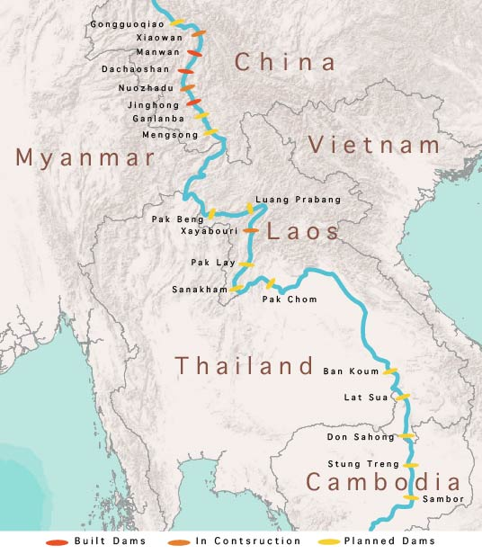
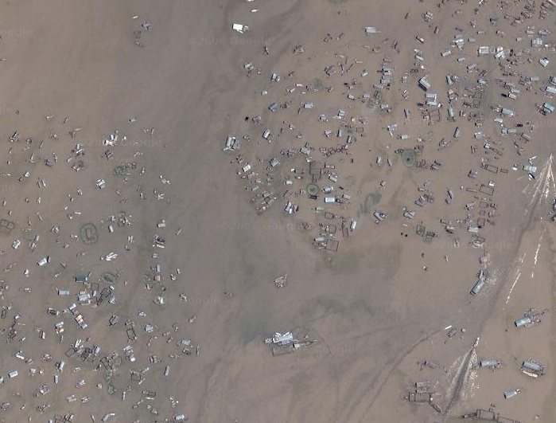

Follow the Great Mekong Catfish as it swims down the threatened Mekong River. By the way, this is a big guy. These catfish can weigh up to 650 lbs. and grow up to 10 feet long!
Be careful, don't scroll too fast, or you may miss his story.
The Mekong River begins its journey in China, among the mountains directly south of the Tibetan Plateau. The mighty river flows through Myanmar, Thailand, Laos, Cambodia, and Vietnam before it empties into the South China Sea.
It is the 12th longest river in the world and runs a course 3,000 miles long, with a total watershed area of 307,000 square miles.
The Mekong River and Basin is home to 60 million people and an extensive number of animal and plant species.
The Mekong Basin hosts one of the richest biodiversity areas in the world, second only to the Amazon. It is estimated to include 20,000 plant species; 1,200 bird species; 800 reptile and amphibian species; and an estimated 850 fish species yet to be discovered. In the last decade alone, 279 new species of fish have been discovered in the Basin.

Up to this point, the Lower Mekong has been running free of dams. However, China currently has three operational dams on the Upper Mekong, with plans to build at least five more. The three dams already in place were built without any form of consultation with downstream Mekong countries, and the dams have already negatively impacted the lower Mekong Basin (Burma, Laos, Thailand, Cambodia, Thailand) by limiting sediment flow and tampering with seasonal water levels.
Currently, eleven dams are scheduled to be built on the Lower Mekong

People living in the Basin rely in large part on the river for their food, business, and transportation.
60 million people in the Lower Mekong Basin attain 60% - 80 % of their protein intake from river fish. On average, a person living in the Basin eats 59 lb. of Mekong fish, annually.

The total economic value of Mekong fisheries is between $5.6 and $9.4 billion, annually. This accounts for 25% of the global fish catch.
Villages situated along the banks of the Mekong depend on the seasonal ebb and flow of the river, a natural process, to water and provide rich sediment for their bank-side gardens.
This yearly delivery of sediment from upstream occurs during the monsoon season and serves to replenish garden nutrients. Villagers along the Lower Mekong have already seen the negative effects of China’s dams on their bank side gardens. Without notice, China has been known to release large amounts of water that flood the banks and drown the gardens. Likewise, much of the sediment originating in China never actually travels beyond the dam, as it is trapped behind concrete walls.
This human dependence on the Mekong is in potential jeopardy with the progress of dam-building plans. Thailand and Laos are the two countries pushing the hardest to go from dam planning stage into construction of mega dams on the main stream of the Mekong.
Laos has long had aspirations of becoming the “battery” of SE Asia, as 35% of the Mekong’s flow occurs within the borders of Laos. They have started this process by building a dam on a tributary of the Mekong, only to sell the electricity to other countries. Currently in the planning stage are 75 more dams, both tributary and main-channel, in Laos alone.
Thailand is developing at a rapid pace and is energy hungry. Thailand is already purchasing approximately 90% of Laos’ hydroelectric output.
Xayaburi Dam, in Laos, has been in the final stages of planning as the very first dam to be built on the Lower Mekong. Final approval had been placed on hold in the last few years so that further study of the Mekong’s food web and ecological vulnerability to changes that would accompany the dam could be assessed. Those studies are not yet finished. As of now, there are no clear answers as to what various impacts the dam will have on the region.
Many living along the Mekong River are living below the poverty line. Their survival is directly linked to the river, dependent upon the fish they catch and sell and the sediment the river delivers for agriculture growth.

Villages located around and on Lake Tonle Sap, in Cambodia, are among the poorest in the basin. Tonle Sap Lake floods annually with the monsoon floods, bringing in sediment and supporting its rich biodiversity. Tonle Sap supports 3 million people and comprises 75% of in-land catch in Cambodia. This is an ecologically and socio-economically fragile area that will face potentially devastating consequences with the placement of more dams on the Mekong.
The Mekong Delta in Vietnam consists of a monsoon season and a dry season. The crops in the Delta rely heavily on sediment flow heading downstream during the monsoon season. In addition, a regular flow of water from upstream during the dry season is necessary to keep salt water from the sea from moving up into the Delta, therefore rendering the land infertile and crops failed for the farmers in the Delta. Dams have proven to negatively impact both of these Mekong biological processes.
On November 3rd, 2012 Laos announced that it is moving foward to begin construction on the massive Xayaburi Dam.
Laos officials say they believe that Xayaburi Dam will allow 85% of fish to pass the dam's walls via fish ladders. This will not include the Giant Mekong Catfish or the Irrawaddy Dolphin, of which there are only 100 left in river. It is estimated that an additional 41 fish species will face extiction because of restricted river access.
No one really knows what effects the Xayaburi and other Lower Mekong dams will have on the region, as a dam of this magnitude has never been constructed in the tropics. One thing is clear: they will greatly change the lives of millions.
By: Rashauna Mead
Sources:
www.mrcmekong.org
www.naturalearthdata.com
www.worldwildlife.org
www.bbc.co.uk
www.savethemekong.org
www.nytimes.com
Varis, Olli. "Poverty, economic growth, deprivation, and water: the cases of Cambodia and Vietnam." AMBIO: A Journal of the Human Environment 37.3 (2008): 225-231.